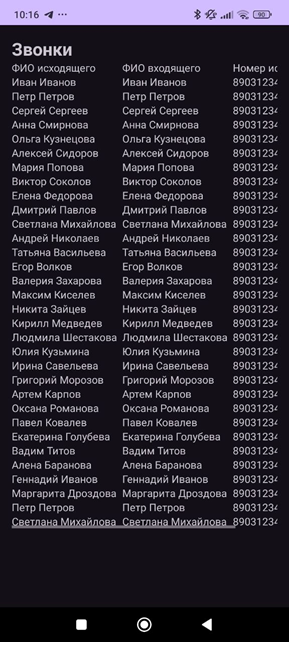
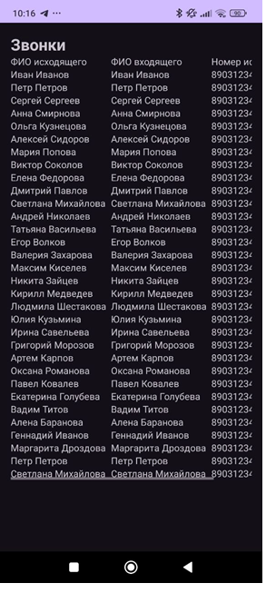

3. Разработка Мобильного приложения
Разработано мобильное приложение, взаимодействующее с базой данных MySQL и предоставляющее доступ к информации о клиентах. Интерфейс организован в несколько разделов, каждый из которых отображает извлеченные из базы данные:
- 1. Долги — отображается список клиентов с задолженностями, включая их имена и адреса, что позволяет отслеживать пользователей с непогашенными обязательствами.
- 2. Разблокированные — раздел с информацией о недавно разблокированных аккаунтах, где указаны имена и адреса клиентов, что упрощает учет активированных учетных записей.
- 3. Звонки — журнал вызовов, содержащий информацию о совершенных звонках. Указаны имена и номера исходящих и входящих абонентов, что позволяет отслеживать историю звонков и активность пользователей.
- 4. Номера клиентов — справочник контактной информации, содержащий имена, номера телефонов и адреса всех клиентов, обеспечивая быстрый доступ к основным данным.
- 5. Тарифы — информация о тарифных планах клиентов с указанием имен, телефонных номеров и используемых тарифов, что упрощает доступ к сведениям о подключенных услугах.
Для реализации функционала использована база данных MySQL, из которой с помощью SQL-запросов извлекаются необходимые данные. Эти данные отображаются в структурированном виде, что делает приложение удобным инструментом для работы с клиентской информацией, задолженностями, тарифами и историей вызовов.
 
